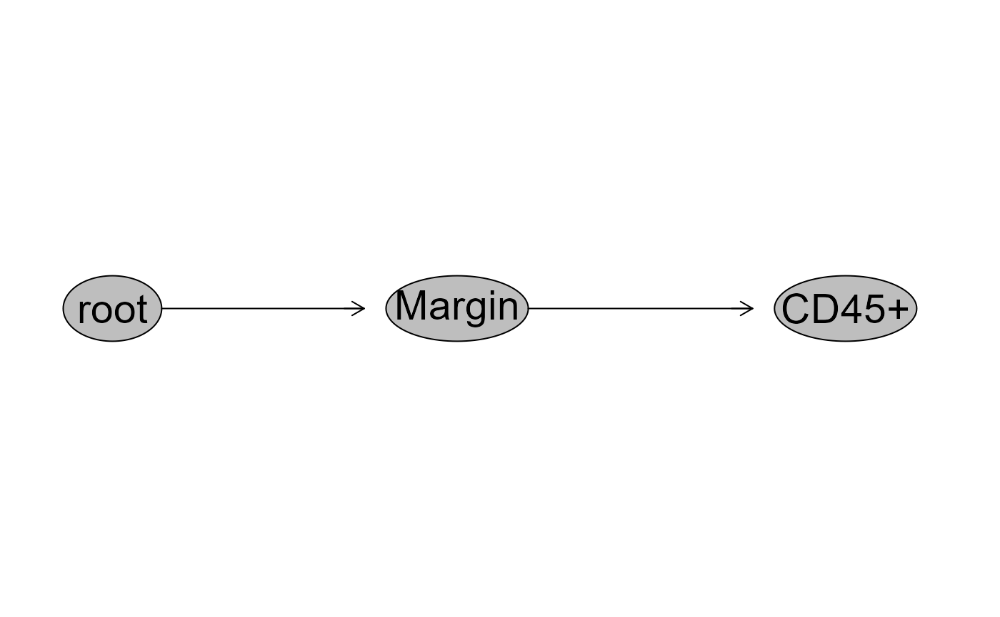
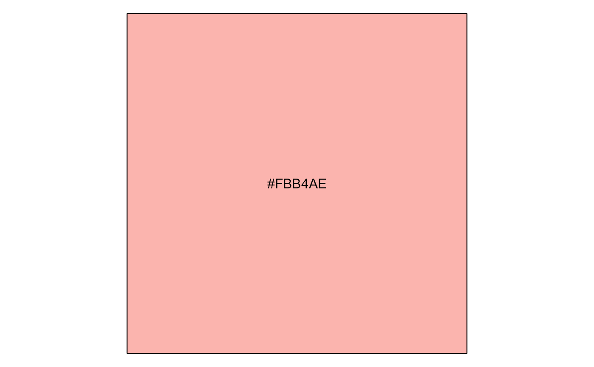

Wetlab Helper Functions
David Rach
University of Maryland, Baltimoredrach@som.umaryland.edu
29 October 2024
Source:vignettes/Wetlab.rmd
Wetlab.rmdIntroduction
The following functions are geared mainly toward pre-acquisition application within a wetlab context. Since I am going to the effort to write an R package and document it with a vignette, I am including them within Luciernaga.
Our typical workflow involves thawing human cord and peripheral blood mononuclear cells (CBMC and PBMC respectively), spinning down to remove the supernatant, and then resuspending. From these, we take 5 uL, stain with anti-CD45, anti-CD14, and anti-CD19 to evaluate cell concentration for the sample. These then go into 6 hours of rest at 3x10^6 cells per ml, before being aliquoted to individual stimulation conditions overnight.
The following three functions and associated workflow detailed below are examples of what I do to speed the process along. I hope it provides you with your own ideas that you can modify them to fit within your own workflows and reduce the time spent at the bench trying to remember a long-forgotten course.
Getting Started
5 uL of sample are stained with the antibody mix (1uL CD45, 1uL CD14, 1.5uL CD19, 20 uL DPBS) for 6 minutes, before 480 uL of PBS is added (roughly 1:100 dilution). Each sample is then counted on a Cytek Aurora set to acquire 30 uL of each tube on high before stopping. We then export these .fcs files and bring them into a FlowJo (TM) work space that is set up to sort the .fcs files to groups set up for the three instruments with different laser configurations present at our core. We copy-paste the template, check the gates, and save the .wsp.
We then bring in the .wsp file to R using CytoML. It is possible to
skip the FlowJo portion of the workflow entirely using the openCyto
package in combination with Utility_GatingPlots() to
validate the gate placement for each specimen, but we will not document
this here for the time being.
We have saved a .wsp file “CellCounts” and two count .fcs files in the Luciernaga extdata for this example.
First lets load the required libraries.
library(flowCore)
library(flowWorkspace)
library(CytoML)
library(dplyr)
library(purrr)
library(lubridate)
library(Luciernaga)
library(shiny)
library(DataEditR)
library(gt)
#library(ghibli)
library(stringr)
File_Location <- system.file("extdata", package = "Luciernaga")
WSP_File <- list.files(File_Location, pattern=".wsp", full.names = TRUE)
ws <- open_flowjo_xml(WSP_File[1])
gs <- flowjo_to_gatingset(ws, name=1, path = File_Location)
plot(gs)
gs
#> A GatingSet with 2 samplesWetlab_Concentration
Now that the .wsp file is loaded into a GatingSet, we can use the
Wetlab_Concentration() function to derrive the cell
concentration for each sample. Luciernaga does this through use of the
count of events present at the designated subset level, in combination
with the description keywords recorded by the acquisition software. In
this case, both samples were present in a TotalVolume of 1. The code to
write the data to a .csv is included after the # symbols.
nameKeyword <- c("GROUPNAME", "TUBENAME")
TheData <- map(.x=gs, Wetlab_Concentration, subset = "CD45+",
nameKeyword=nameKeyword, DilutionMultiplier=100,
TotalVolume=1) %>% bind_rows()
TheData
#> name Cells Volume ConcentrationScientific TotalVolume TotalScientific
#> 1 NY072_1 2985 30.29 9.9e+06 1 9.9e+06
#> 2 NY071_1 2189 30.5 7.2e+06 1 7.2e+06
#> TimeSeconds Instrument Date
#> 1 28.1 4L_UV 27-Sep-2024
#> 2 28.1 4L_UV 27-Sep-2024
#ComputerSpecific <- "C:/Users/JohnDoe/"
#path <- file.path(ComputerSpecific, "Desktop", "CellCounts")
#CSVName <- file.path(path, "CellCounts.csv")
#write.csv(TheData, CSVName, row.names=FALSE)Wetlab_Rest
Now that we know the concentration for each of our specimens, I take this information and figure out what I need to do to re-suspend the stock concentration to one of 3.0x10^6 cells per mL.
In actual practice, I will save the above data output as a .csv and bring it back into R with the code as seen below:
Next up we bring in the CellCounts, and use Dillon’s Hammill’s DataEditR to swap in the correct total volumes.
#ComputerSpecific <- "C:/Users/JohnDoe/"
#path <- file.path(ComputerSpecific, "Desktop", "CellCounts")
#CSVFiles <- list.files(path, pattern=".csv")
#FileInterest <- file.path(path, CSVFiles[1])
#TheData <- read.csv(FileInterest, check.names=FALSE)
TheData
#> name Cells Volume ConcentrationScientific TotalVolume TotalScientific
#> 1 NY072_1 2985 30.29 9.9e+06 1 9.9e+06
#> 2 NY071_1 2189 30.5 7.2e+06 1 7.2e+06
#> TimeSeconds Instrument Date
#> 1 28.1 4L_UV 27-Sep-2024
#> 2 28.1 4L_UV 27-Sep-2024In the case of our workflow, sometimes when acquiring multiple
specimens, the TotalVolume the initial resuspension was in will differ
will differ between specimens. One could edit it within the outputted
.csv file before bringing into R, but another way is to use
DataEditR and edit it within R using it’s ShinyApp. The
Example code is provided below with a # symbol to avoid causing issues
with building the vignette. Don’t forget to synchronize to ensure the
edits to TotalVolume are retained.
EditableData <- TheData %>% select(-TotalScientific, -TimeSeconds)
#NewData <- DataEditR::data_edit(EditableData) #Remove the first # to run
NewData <- EditableData #Add a # here if running DataEditR.
Updated <- NewData
Updated
#> name Cells Volume ConcentrationScientific TotalVolume Instrument
#> 1 NY072_1 2985 30.29 9.9e+06 1 4L_UV
#> 2 NY071_1 2189 30.5 7.2e+06 1 4L_UV
#> Date
#> 1 27-Sep-2024
#> 2 27-Sep-2024With the TotalVolume column now correct, we can proceed to calculate the re-suspension:
#ComputerSpecific <- "C:/Users/JohnDoe/"
#path <- file.path(ComputerSpecific, "Desktop", "CellCounts")
Test <- Wetlab_Rest(data=Updated, DesiredConcentration_MillionperML=3, MaxMLperTube=1, returntype="data", outpath=path)
gt(Test)| name | Date | CurrentConcentration | TotalVolume | TotalCells | DesiredConcentration | NeededVolume | IncreaseVolumeML | SpinDown | TubeMaxML | TotalTubes |
|---|---|---|---|---|---|---|---|---|---|---|
| NY072_1 | 27-Sep-2024 | 9900000 | 1 | 9.9e+06 | 3e+06 | 3.3 | 2.3 | FALSE | 1 | 3.3 |
| NY071_1 | 27-Sep-2024 | 7200000 | 1 | 7.2e+06 | 3e+06 | 2.4 | 1.4 | FALSE | 1 | 2.4 |
When the concentration is too low, SpinDown will be set to TRUE, and an additional row consisting of the volume needed to resuspend in after removing the supernatant will be placed immediately below.
Wetlab_Decision
We also need to set a desired color-palette.
#Palette <- ghibli_palette(name="PonyoLight", n=7, direction=1, type="discrete")
#ColorSelection <- Palette[5]
#scales::show_col(ColorSelection)
Palette <- RColorBrewer::brewer.pal(n = 7, name = "Pastel1")
ColorSelection <- Palette[1]
scales::show_col(ColorSelection)
Conclusion
Hope this vignette was useful as a proof-of-principle.
#> R version 4.4.1 (2024-06-14 ucrt)
#> Platform: x86_64-w64-mingw32/x64
#> Running under: Windows 11 x64 (build 22631)
#>
#> Matrix products: default
#>
#>
#> locale:
#> [1] LC_COLLATE=English_United States.utf8
#> [2] LC_CTYPE=English_United States.utf8
#> [3] LC_MONETARY=English_United States.utf8
#> [4] LC_NUMERIC=C
#> [5] LC_TIME=English_United States.utf8
#>
#> time zone: America/New_York
#> tzcode source: internal
#>
#> attached base packages:
#> [1] stats graphics grDevices utils datasets methods base
#>
#> other attached packages:
#> [1] stringr_1.5.1 gt_0.11.1 DataEditR_0.1.5
#> [4] shiny_1.9.1 Luciernaga_0.99.1 lubridate_1.9.3
#> [7] purrr_1.0.2 dplyr_1.1.4 CytoML_2.16.0
#> [10] flowWorkspace_4.16.0 flowCore_2.16.0 BiocStyle_2.32.1
#>
#> loaded via a namespace (and not attached):
#> [1] RBGL_1.80.0 gridExtra_2.3 rlang_1.1.4
#> [4] magrittr_2.0.3 matrixStats_1.4.1 ggridges_0.5.6
#> [7] compiler_4.4.1 dir.expiry_1.12.0 png_0.1-8
#> [10] systemfonts_1.1.0 vctrs_0.6.5 reshape2_1.4.4
#> [13] pkgconfig_2.0.3 fastmap_1.2.0 utf8_1.2.4
#> [16] promises_1.3.0 ncdfFlow_2.50.0 rmarkdown_2.28
#> [19] graph_1.82.0 ragg_1.3.3 xfun_0.48
#> [22] zlibbioc_1.50.0 cachem_1.1.0 jsonlite_1.8.9
#> [25] highr_0.11 SnowballC_0.7.1 later_1.3.2
#> [28] parallel_4.4.1 R6_2.5.1 bslib_0.8.0
#> [31] stringi_1.8.4 RColorBrewer_1.1-3 reticulate_1.39.0
#> [34] jquerylib_0.1.4 figpatch_0.2 Rcpp_1.0.13
#> [37] bookdown_0.41 knitr_1.48 zoo_1.8-12
#> [40] httpuv_1.6.15 Matrix_1.7-0 timechange_0.3.0
#> [43] tidyselect_1.2.1 rstudioapi_0.17.0 yaml_2.3.10
#> [46] viridis_0.6.5 miniUI_0.1.1.1 lattice_0.22-6
#> [49] tibble_3.2.1 plyr_1.8.9 withr_3.0.1
#> [52] Biobase_2.64.0 basilisk.utils_1.16.0 evaluate_1.0.1
#> [55] Rtsne_0.17 desc_1.4.3 xml2_1.3.6
#> [58] pillar_1.9.0 lsa_0.73.3 BiocManager_1.30.25
#> [61] filelock_1.0.3 stats4_4.4.1 shinyjs_2.1.0
#> [64] plotly_4.10.4 generics_0.1.3 S4Vectors_0.42.1
#> [67] ggplot2_3.5.1 munsell_0.5.1 ggcyto_1.32.0
#> [70] scales_1.3.0 xtable_1.8-4 glue_1.8.0
#> [73] lazyeval_0.2.2 tools_4.4.1 hexbin_1.28.4
#> [76] data.table_1.16.2 fs_1.6.4 XML_3.99-0.17
#> [79] grid_4.4.1 tidyr_1.3.1 RProtoBufLib_2.16.0
#> [82] shinyBS_0.61.1 colorspace_2.1-1 patchwork_1.3.0
#> [85] basilisk_1.16.0 cli_3.6.3 textshaping_0.4.0
#> [88] rhandsontable_0.3.8 fansi_1.0.6 cytolib_2.16.0
#> [91] viridisLite_0.4.2 uwot_0.2.2 Rgraphviz_2.48.0
#> [94] gtable_0.3.5 sass_0.4.9 digest_0.6.37
#> [97] BiocGenerics_0.50.0 htmlwidgets_1.6.4 farver_2.1.2
#> [100] htmltools_0.5.8.1 pkgdown_2.1.1 lifecycle_1.0.4
#> [103] httr_1.4.7 mime_0.12